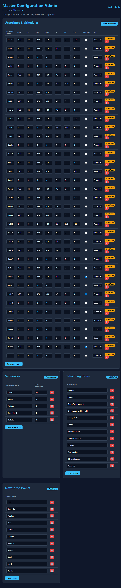
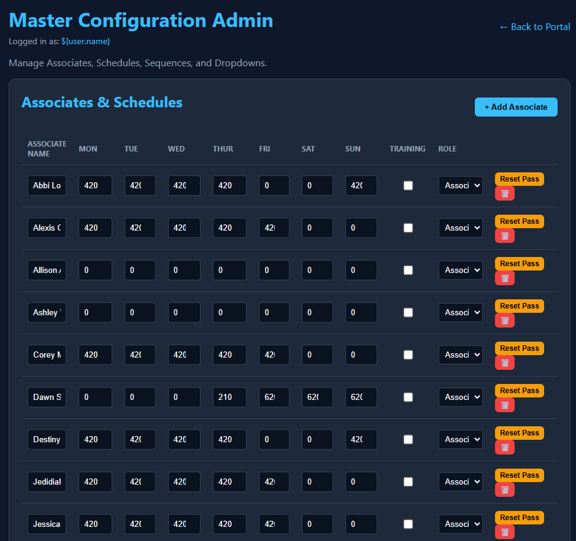
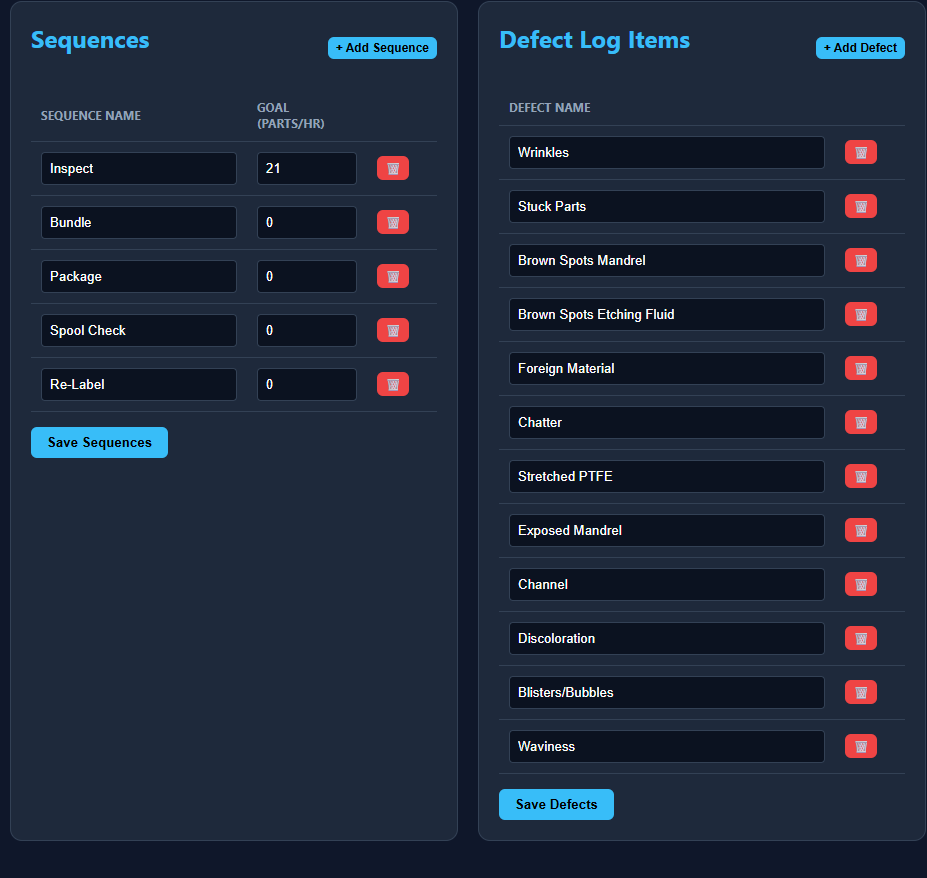
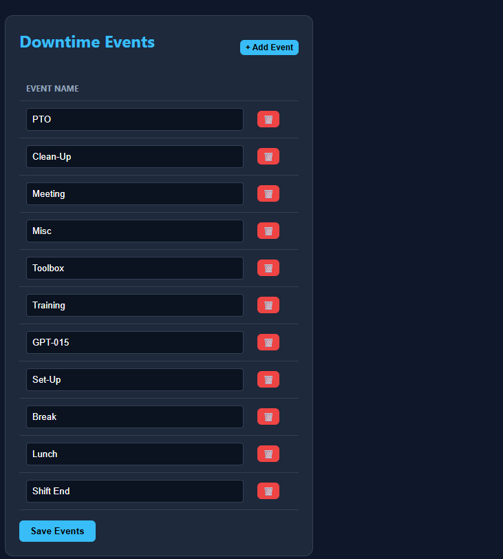

Precision Liner PCD Portal — Supervisor/Admin SOP
Purpose
This SOP covers the Master Configuration Admin panel. As a supervisor, you will use this interface to manage employee access, edit downtime/defect categories, and configure production goals. All changes made in the Admin panel sync directly to the master Smartsheet backend using background API calls.
Table of Contents
- Accessing the Admin Panel
- Managing Associates & Schedules
- Managing Sequences & Goals
- Managing Defects & Events
1. Accessing the Admin Panel

(Above: The Supervisor Admin Panel)
- Log into the Precision Liner portal normally.
- If your account
Role is set to Supervisor, you will see an Admin button in the top right corner of the dashboard next to your name.
- Click Admin to open the Master Configuration page.
(Note: If you do not see the Admin button, your account does not have Supervisor privileges. Contact a system administrator to update your role in Smartsheet).
2. Managing Associates & Schedules

(Above: The Associates & Schedules configuration table)
This section allows you to onboard new associates, define their scheduled hours, and manage access.
Adding a New Associate
- Click + Add Associate.
- A new blank row will appear at the bottom of the table.
- Enter their Associate Name.
- Set their scheduled hours for each day of the week (Mon-Sun).
- Toggle the Training checkbox if they are currently in training.
- Set their Role to Associate or Supervisor.
- Click the blue Save Associates button at the bottom of the table to push the new user to Smartsheet.
Resetting an Associate's Password
If an associate forgets their password:
- Locate their name in the table.
- Click the yellow Reset Pass button.
- Confirm the prompt.
- The associate will be forced to create a new secure password on their next login attempt.
Deleting an Associate
- Click the red trashcan (🗑️) next to the associate's name.
- Confirm the prompt to permanently delete their record from Smartsheet.
3. Managing Sequences & Goals

(Above: The Sequences configuration table)
Sequences dictate the Takt Time (pieces per hour) expected from the operator.
- Review the list of active sequences (e.g., Inspect, Bundle, Package).
- To modify a goal, click the number under Goal (Parts/Hr) and type the new target.
- To add a new sequence process, click + Add Sequence and fill out the name and goal.
- Click Save Sequences to apply the changes globally.
4. Managing Defects & Events

(Above: The Defects and Events configuration tables)
The portal dynamically generates its dropdowns and defect buttons from these lists.
Defect Log Items
- To track a new type of defect, click + Add Defect.
- Type the name (e.g., "Core Damage").
- Click Save Defects.
- This new defect will instantly appear on all active operator dashboards.
Downtime Events
- To add a new downtime reason (e.g., "Material Shortage"), click + Add Event.
- Type the new event name.
- Click Save Events.
- The new event will populate in the Event Entry dropdown for all operators.
End of Supervisor SOP.